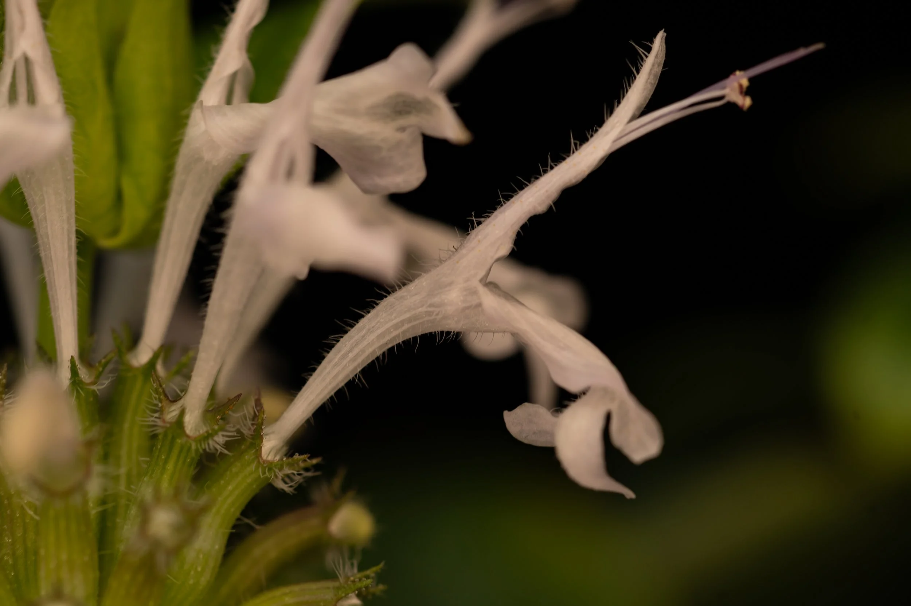
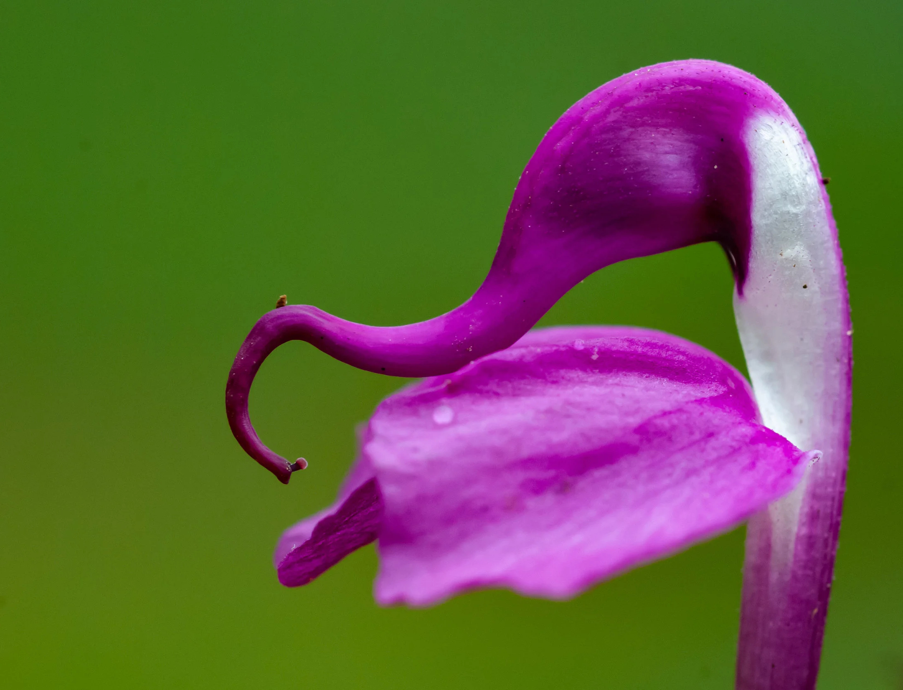

01
Genomics and systematics
We use genomics to study relationships among species and to understand the origins of recent divergence + the effect of gene flow.
Monarda
For our current work we are assembling high-quality reference genomes and analyzing genus-wide sequencing to understand systematics. Doing so will enable lots of downstream questions about speciation and adaptation.

Phlox and Pedicularis
Previous projects have examined floral color and recent divergence in Phlox and the evolution of Pedicularis in the Hengduan Mountains.

...and more!
Plant diversity is what motivates us, so we are definitely excited to embrace new flowering plant systems in the future.